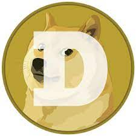

DogeCoin
No momento doge ecoa a explosão dos tokens não fungíveis (NFTs, na sigla em inglês), usados para comprovar a posse de mídias digitais. O dogecoin pode lembrar um projeto de arte coletivo que qualquer um consegue comprar por coisa de 30 centavos, em vez dos milhões de dólares que alguns têm gastado em NFTs.